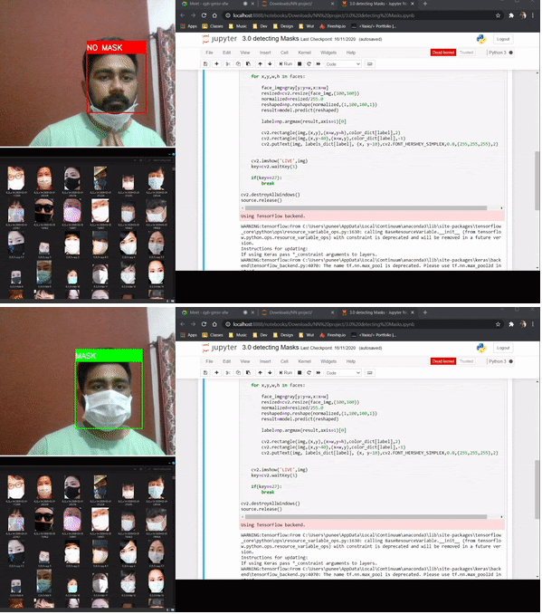
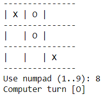
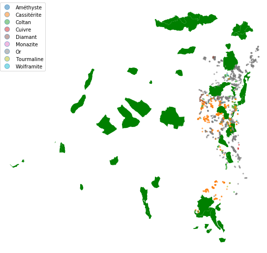

Technologies: python (Pygame)
Objective: Develop a Sudoku Solver Game in Python with a user-friendly GUI, allowing manual puzzle-solving or automated solving using a backtracking algorithm
Result: Built an interactive Sudoku Solver Game using Python and Pygame, featuring clickable cells, intuitive controls, and a visual backtracking algorithm. The game includes a user manual for input, value confirmation, error correction, and automated solving, providing an engaging and seamless user experience.

Technologies: Python (Tensorflow,Matplotlib,Pandas)
Objective: Implemented image processing and machine learning techniques for a robust CAPTCHA recognition system,
supported by data visualizations.
Result: Recognized Captchas using Convolution Neural Networks in TensorFlow achieving accuracy of 90% and presented
data visualizations.

Technologies: Python (OpenCV, TensorFlow, Matplotlib )
Objective: Develop a live mask detection system using a Convolutional Neural Network (CNN) to classify individuals as wearing or not wearing a mask in real-time
Result: Implemented a mask detection model with over 95% accuracy enabling real time mask detection via webcam.

Technologies: Python (Pygame) (Min Max algorithm with Alpha Beta Pruning)
Objsective & Result: Designed Tic Tac Toe Game using Pygame library and programmed AI logic Guaranteeing 100% winning rate in
case tie does not happen
Enhanced: Enhanced efficiency of Algorithm by adding alpha beta pruning to algorithm making it 2 times faster.

Technologies: Python (Falsk, streamlit, tensorflow, matplotlib)
Objective: Create a web application to visually simulate the structure and functioning of a neural network on MNIST dataset
Result: Developed an interactive neural network visualization tool with user friendly interface.
Technologies: Python (Django), HTML,CSS
Objective: Develop a website connecting tourists and customers, with access management, review features, and personalized recommendations.
Result: Created a Django-based platform with user authentication and role-based access for tourists and customers. Enabled review management, allowing users to add, edit, and delete reviews based on ownership. Integrated review sorting by rating and creation date, and used cookies to track and display recently viewed offerings

Technologies: Python (Django) , React
Objective Simplify the creation of adaptable pricing pages for SaaS businesses and streamline payment system integration.
Result: Price page building pro enables customizable pricing pages with pre-designed themes or custom HTML, seamlessly integrates with Stripe for payment processing, and offers multiple deployment options. It features secure access via Firebase Authentication, responsive design, and A/B testing to optimize conversion rates, all while providing scalability and flexibility for diverse business needs.

Technologies: Python (Geopandas , Shapley)
Objective: Utilized spatial joins, relationships, CRS, operations and Visualization to analyse various aspects.